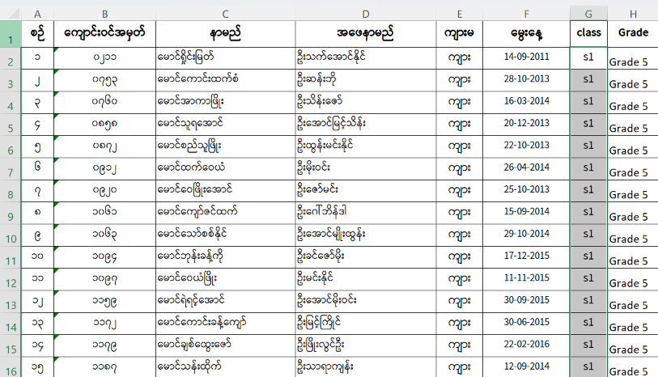
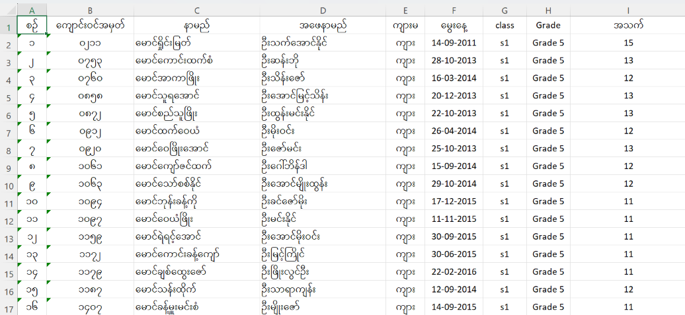
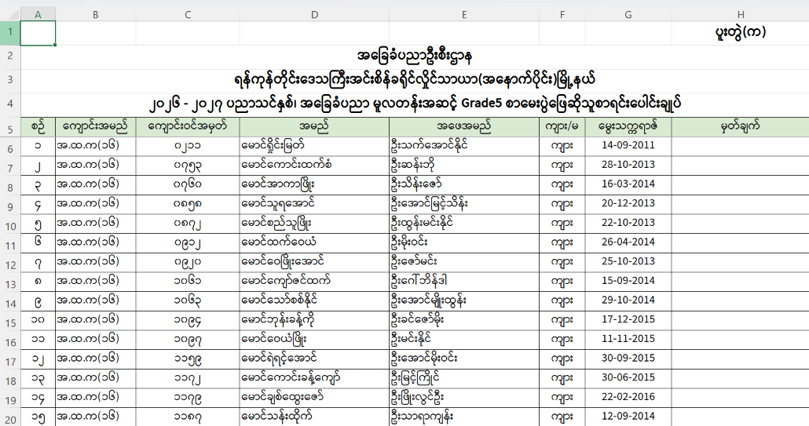
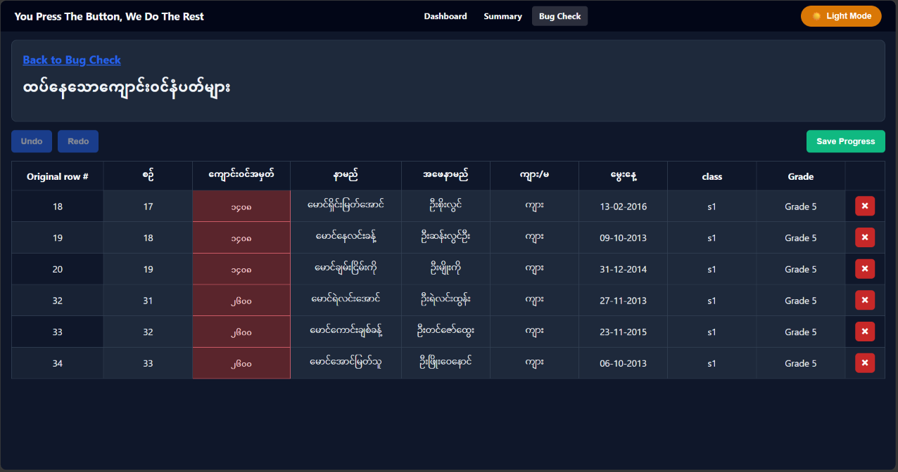
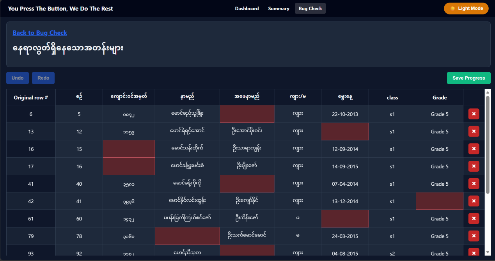
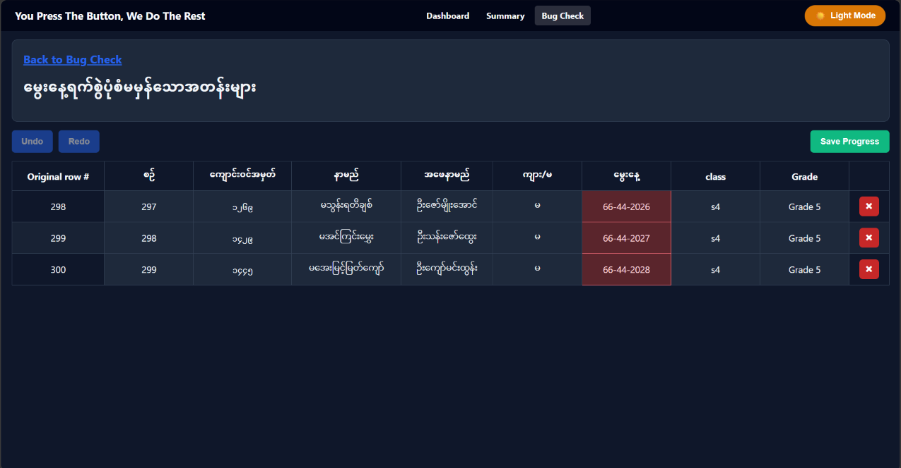
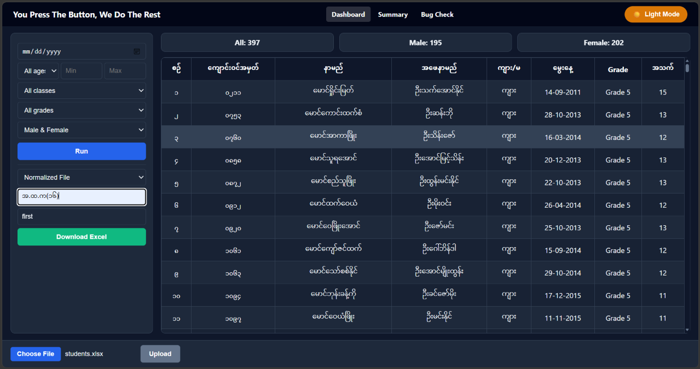
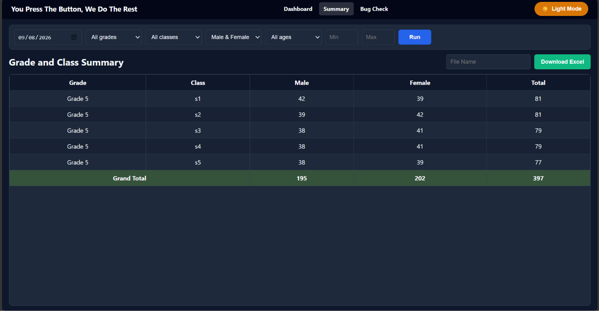

Student Records
Manage student data stored in PostgreSQL.
An independent Flask and PostgreSQL student-data management application for Excel upload, validation, editable bug review, student records, filtering, summaries, and exports.
Independent student-data application with database-level integration to Auth Service and separate local session handling.
Student Dashboard V2 manages student records in PostgreSQL, accepts Excel files, validates uploaded data, provides an editable bug-review workflow, and exports processed data. It also supports filtering, student statistics, grade/class summaries, theme switching, and a local Flask session/login.
Manage student data stored in PostgreSQL.
Filter records and view student statistics plus grade/class summaries.
Use theme switching and the application's local Flask session/login.
The Student Dashboard V2 is a separate application. Its Flask routes handle student data processing, Excel validation, bug review, filtering, summaries, exports, and its own local session. User registration and password management are handled by the separate Auth Service; after account creation, users access the Student Dashboard login separately. Student Dashboard verifies credentials using the shared user database, then creates its own session. This is database-level integration, not API-based Single Sign-On.
The Student Dashboard accepts Excel data as input, validates the records, identifies duplicate roll numbers, incomplete rows, and invalid dates, and allows clean data to be imported into PostgreSQL. Processed student data can be exported into normal and normalized Excel files, including a summary export.

Input file used by the system.

Normal student-data export.

Normalized / formatted export.
Auth Service: registration and password management → shared user database → Student Dashboard login: credential verification → Student Dashboard local session. This is database-level integration, not API-based Single Sign-On.
Detected problems can be reviewed and corrected through the editable bug-review workflow before clean data is imported.

Duplicate school-entry/roll numbers detected.
Duplicate student/roll numbers are detected in the uploaded Excel data.

Required student data is missing.
Rows or cells with missing required information are detected.

Invalid date format detected.
Date values are checked against the expected format: DD-MM-YYYY.
Invalid date format detected.
Date values are
checked against the expected format: DD-MM-YYYY.
Student Dashboard V2 is an independent Flask web application. Auth Service handles registration and password management, while Student Dashboard performs its own credential verification against the shared user database and creates its own session. This database-level integration is separate from the dashboard's Excel, validation, and reporting logic.
CENTRAL AUTHENTICATION SERVICE
